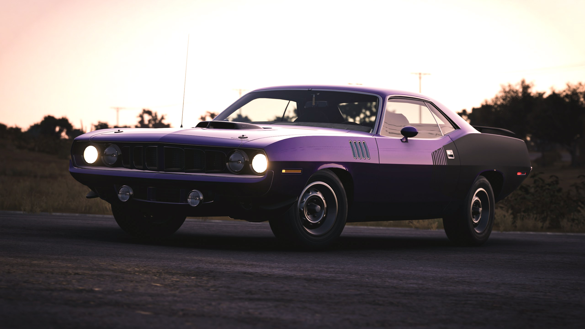
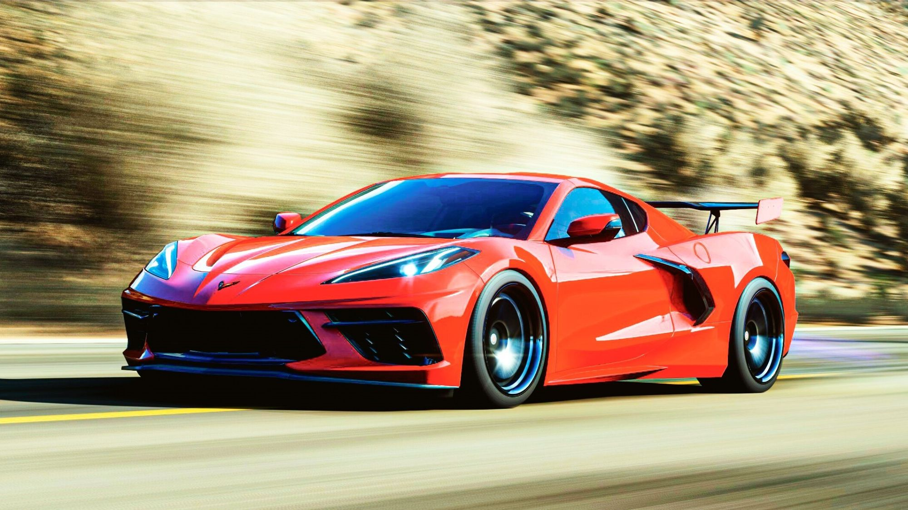

Check out these interactive plots intended to reveal useful information about player auctions in Forza Horizon 5.
Here are are two time-series scatter plots that show information about the winning bid amount for the most popular cars. This data represents a random sample of successful auctions.
This information was gathered from an auction house search for all cars. The records represent a random sample of all the cars that end up there. Therefore, the patterns shown here should accurately inform us of that entire population.
However, because the game will only provide 100 of the most-impending auctions at a time, this dataset only includes those auctions that did not get 'bought out' more than about two minutes before the auction end time.

Fewer models, but a wider perspective that's good for viewing more data over time. Best for a desktop or horizontal display.
View Interactive Plot
More models, and a taller perspective that's good for a high-fidelity view of the bid price. Best for a phone or vertical display.
View Interactive Plot